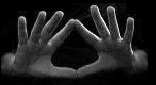
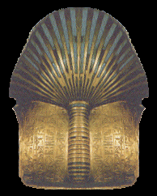

*Special Thanks to Azazel who worked with me on this meditation

*Special Thanks to Azazel who worked with me on this meditation
*Special Thanks to Azazel who worked with me on this meditation
In order to open your crown chakra effectively, you must have already performed
the Opening of the Third Eye. and the opening of the 6th chakra.
The effects of this exercise are extremely pleasurable. A feeling of
lightness should follow. Some people may feel
energy or tingling inside their heads, or completely covering their
heads; a slight pressure in the crown area and intense euphoria. The pleasant light feeling is what makes astral projection and astral travel easy. The bliss state can occur hours and even days later.
With this revised meditation [30/August/2018], using two different vibrations is much more powerful and effective. The first one is based on the Björk rune.* Opening this pathway is also very healing for drug addicts as it naturally induces extreme pleasure. The second vibration is the MAUM mantra.
This exercise can produce quite a headache [especially with people who are prone to having headaches] which can occur the following day. If your crown chakra is open, you will feel a lightness and a sense of bliss. If you do not experience these indications after a period of 4-5 days, you can redo this exercise again as many times as needed to open your crown. Also, not everyone experiences a headache, but if you are susceptible to having headaches, be aware of this.
|  | 1. Place your hands in the position shown at left and take a deep breath and hold it for as long as comfortable- (do not push this) and release your breath vibrating B-B-B-B-B-B-B-B (vibrate with a deep, soft hum with the lips almost closed) The vibration should sound like a bee. The bee was sacred in Ancient Egypt and many other ancient cultures for this very reason. |
Click Here for BJÖRK Mp3 Audio
You should focus the vibration into your crown chakra right in the center on the top of your head, just inside your skull. Do this B vibration seven times.
2. Again, focus on your crown chakra and vibrate MAUM, vibrated as M-M-M-AH-AH-AH–U-U-U–M-M-M, 6 times into your crown chakra. Extend the M-M-M-M-M at the end of the vibration until you have completely exhaled.
This exercise is extremely powerful, much more powerful than the former version.
Do this exercise for four consecutive days.
| Now align your crown chakra by visualizing it point down as illustrated at left. |
| The Björk rune bestows intuition, protects energy, gathers and directs the powers of the four elements, is healing and revitalizes the life force. |
|  | Note the bee stinger on the rear of Tutankhamen’s coffin headdress. |

BACK TO MAIN POWER MEDITATION PAGE
© Copyright 2005, 2007, 2018, Joy of Satan Ministries;
Library of Congress Number: 12-16457